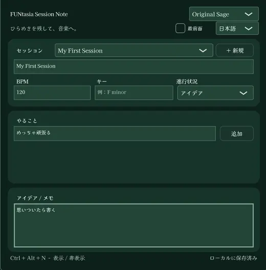

日々の制作を支えるツール
音楽制作やWindowsでの作業を快適にするユーティリティを紹介するためのページです。公開済み製品と開発中のツールを、それぞれの状態が分かるように紹介します。
FUNtasia Player、FUNtasia Mixer、FUNtasia Session Noteなど、公開中のWindows向けアプリをご紹介。開発中のツールは別に案内しています。
音楽制作やWindowsでの作業を快適にするユーティリティを紹介するためのページです。公開済み製品と開発中のツールを、それぞれの状態が分かるように紹介します。
公開状態、対応OS、バージョン、配布先を確認してから案内します。開発中のアプリについてはダウンロードを案内していません。
Windowsのオーディオ出力やアプリごとの音量操作を、使いやすくまとめるユーティリティ。
再生のためのシンプルなスタンドアロン・オーディオプレーヤー。Windowsからファイルを開くかドラッグ＆ドロップし、再生・停止・リピート・シーク・音量を操作できます。
v1.2.1ではASIO対応の音声出力設定と7色のテーマに対応。出力デバイスとテーマの選択を保存します。EQ・ノーマライズ・リミッター・サチュレーションなどの音声処理は追加しません。


ひらめきを残して、音楽へ。制作セッションごとにアイデア・メモ・ToDoをまとめ、BPM・キー・進行状況も記録できる軽量デスクトップアプリです。
ローカル自動保存、日本語／English切替、Kaisei Opti内蔵、7色のダークテーマ、最前面固定、Ctrl + Alt + Nでの表示切替に対応。作曲の流れを邪魔せず、必要なときだけ呼び出せます。
ベータ版です。大切な制作メモはバックアップを取ってください。

以下は開発プロジェクトの紹介です。一般公開やダウンロード提供を示すものではありません。
必要な制作ツールを素早く呼び出すためのランチャー構想。提供機能や公開時期は未定です。
正式公開したツールのみ、対応OS・更新履歴・ダウンロード先を確認してから掲載します。